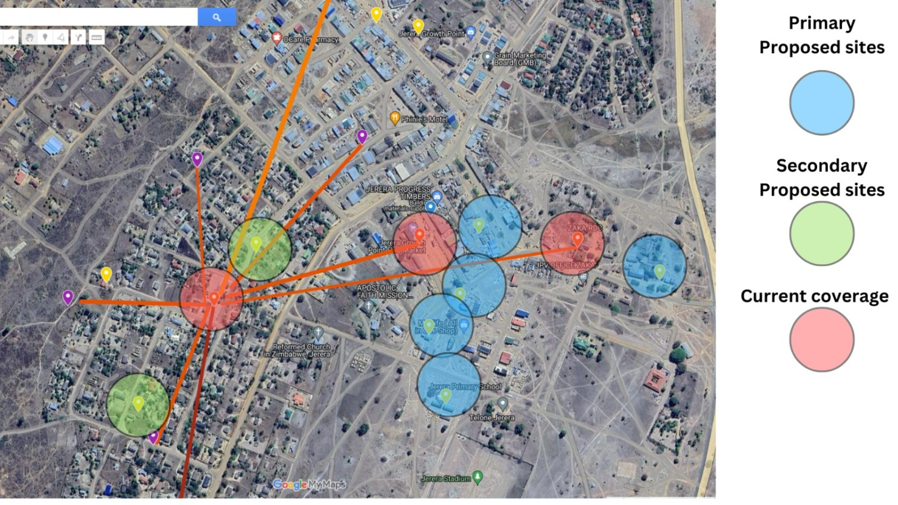
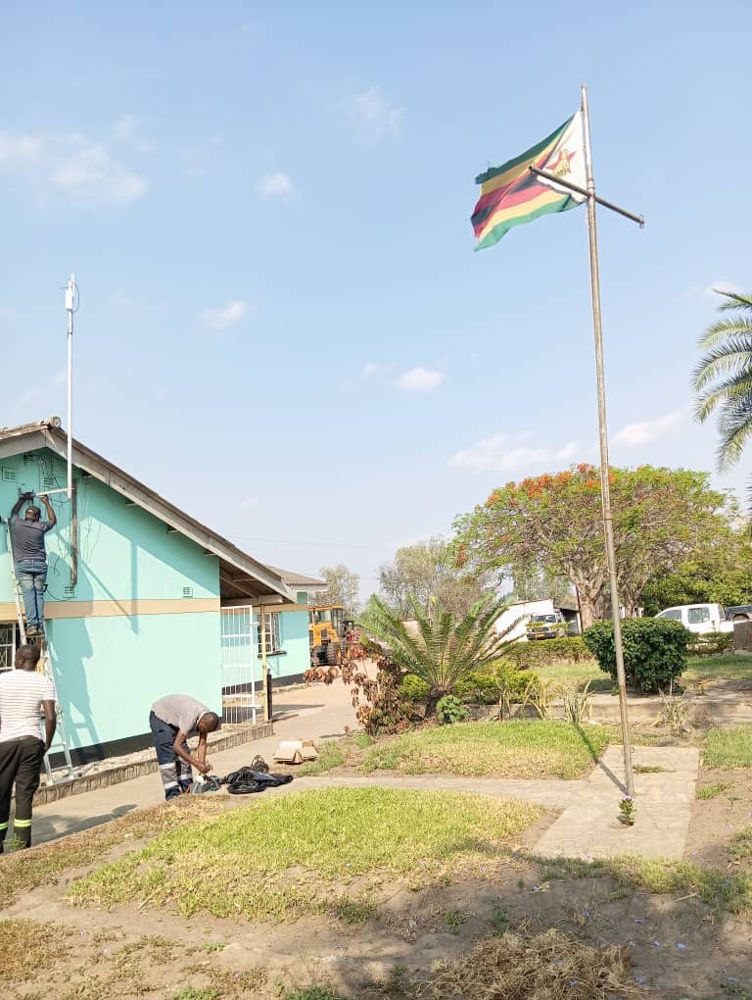
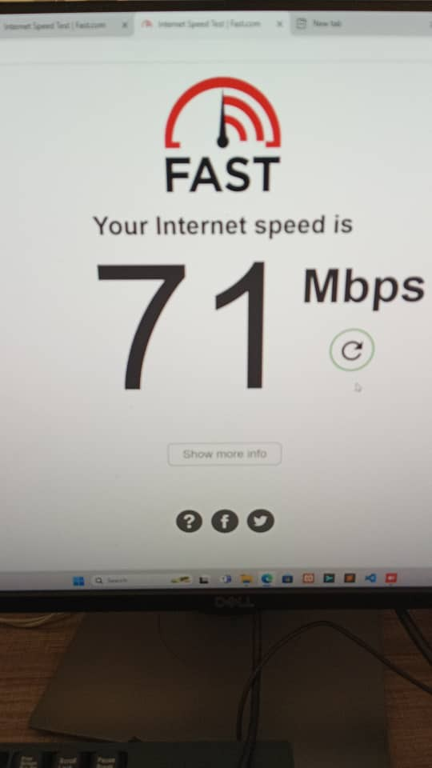
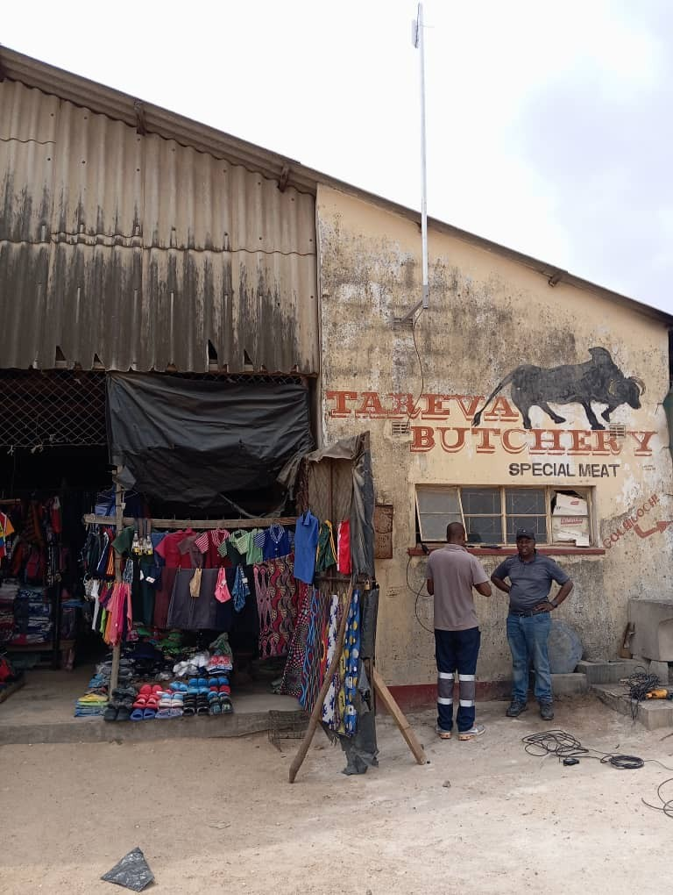

Community Connectivity Reimagined: Starlink and Edge AI in the heart of Jerera
The Connectivity Problem Most People Don't See
In many smaller towns across Zimbabwe, reliable internet is still a privilege. For entrepreneurs, students, development workers, and healthcare staff in places like Jerera (Zaka District), lack of stable connectivity limits access to education, markets, and essential services that others take for granted.
Last winter, Belenga was commissioned by TD and Partners to design and implement a metro-wide WiFi solution in Jerera. The mandate was clear:
"Design something that works — practically, sustainably, and affordably — for this context."
This wasn't just about deploying access points. Real connectivity in African towns demands more than signal strength — it requires intelligent design rooted in local realities.
Zimbabwe's New Connectivity Era
By Q4 2024, Zimbabweans had acquired over 20,000 Starlink kits — including 2,000 procured by the government to fast-track national digital access.
As this next-generation infrastructure rolls out, there's an urgent need for practical, field-tested deployment models that ensure it reaches the communities who need it most. The Jerera project offers one such blueprint.
Every Deployment Starts with a Map
At Belenga, we spend a lot of time making maps — because successful connectivity always starts with understanding the ground.
Here's a map showing the initial survey of the Jerera CBD, where we eventually deployed free public WiFi.
What might look like a basic coverage diagram actually powered a much deeper transformation:
- Civic access to digital government services
- Reliable internet for students and schools
- Market traders promoting their goods
- Small businesses gaining access to AI-driven tools
This is real-world digital infrastructure — built for people, not just devices.
Designed with the Community
From day one, we worked directly with:
- The local District Office
- Community development partners
- Civic leaders
Together, we selected access points based on daily use patterns — not just signal range. Final locations included:
- The Civic Centre, near the clinic and courthouse
- The Jerera bus terminus, a major commerce hub
- TD's CBD headquarters
- Two high-density residential areas
The Hybrid Solution We Built
To ensure coverage, resilience, and real-world relevance, we combined multiple layers of infrastructure in one integrated system:
✅ Starlink as the Global Backhaul
Delivered stable, high-speed internet — bypassing the limitations of unreliable national carriers and absent fiber networks.
✅ Metro WiFi Distribution
Community access points provided strong, consistent signal coverage across key hubs in Jerera.
✅ Free Access to Essential e-Services
Including:
- ZESA prepaid electricity
- School fee portals
- Govt. e-services
✅ Edge Server Hosting a Community Portal
We created a locally hosted portal offering free, zero-data access to essential e-services, including:
- ZESA prepaid electricity purchase
- School fee payment portals
- Government service platforms
✅ AI at the Edge: GPT-Like Services, Locally
We integrated a lightweight AI assistant using Ollama + Node.js, trained on localized business knowledge. This gave entrepreneurs access to GPT-style support — without the cost of cloud-based alternatives.
Learning, Sharing, Connecting — On Day One
As we began installing the WiFi hotspots, the community immediately responded.
There was an initial flurry of connections — residents eagerly logging on to check social media and connect with friends and family. But what started as curiosity quickly evolved into deeper engagement. Locals began asking questions: "What is this network? How can we use it beyond Facebook and WhatsApp?"
These organic conversations turned into impromptu training sessions — covering everything from accessing essential services to using GPT-style AI tools. We introduced the idea that they now had a personal business advisor in their pocket — available anytime, even offline.
The impact was immediate: What started as a deployment became a community moment — a shared realization that connectivity could mean more than just being online. It could mean being empowered.
💡 Why This Model Works
The key lesson? Engage before you deploy.
Too many connectivity projects fail not because the technology is wrong — but because the assumptions are. Connectivity isn't just about bandwidth; it's about designing for how people actually live, work, and learn.
In Jerera, we didn't start with hardware. We started with people — understanding daily rhythms, digital habits, and the barriers that hold communities back. That's what shaped the solution.
This design is more than a network — it's a local digital utility that's:
- ✅ Low-cost to operate, with minimal recurring overhead
- ✅ Resilient to national outages, thanks to Starlink and local fallback content
- ✅ Relevant from day one, with tools that match community needs
What made it work wasn't just the tech — it was the process. The trust built by showing up, listening, adapting, and explaining. That's how infrastructure becomes adoption. That's how adoption becomes empowerment.
This is what connectivity looks like when it's built with — not just for — the community.
A Personal Note
For me, this project reflects exactly why we built Belenga Dev: to deliver practical, high-impact technology for Africa's frontier markets — places often overlooked, yet full of potential.
The conditions aren't always predictable. The infrastructure is rarely ideal. But that's the point — if you can build systems that work here, you've built something truly resilient.
We didn't come to Jerera with a one-size-fits-all plan. We came with curiosity, respect, and the belief that technology should serve people, not the other way around. Every hotspot we installed, every conversation we had, every question we answered — that was part of something bigger: a blueprint for how emerging markets can leap forward, on their own terms.
When you design for how Africa works today, you don't just unlock connectivity — you unlock confidence, creativity, and opportunity.
🔭 What's Next?

As Zimbabwe accelerates its Starlink rollout, we see enormous potential to scale this model: hyper-local networks that are affordable, adaptable, and truly community-driven.
This isn't just a Jerera story — it's a national opportunity.
We're already collaborating with:
- 🏛 Local and national governments
- 🎓 Education providers and NGOs
- 🌍 Development agencies and digital inclusion partners
- 💼 Private sector innovators looking to scale impact sustainably
If you're serious about building meaningful infrastructure in emerging markets — not just connectivity, but systems people can use and trust — we're ready to work with you.
Let's build what the future needs — starting with what people need today.
📩 Reach us at info@blnga.co.zw